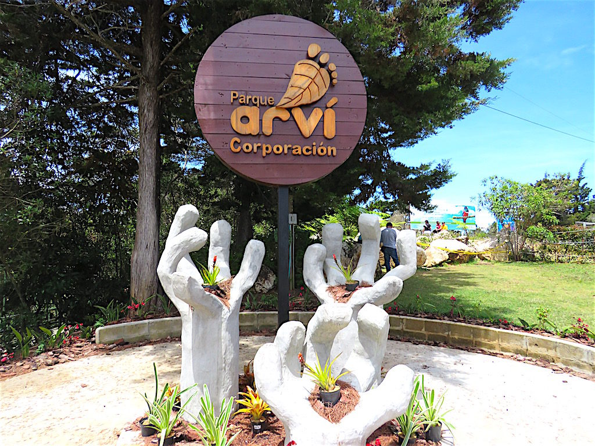
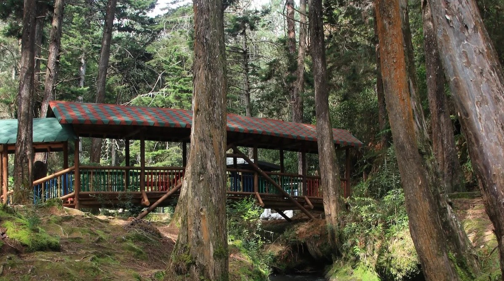
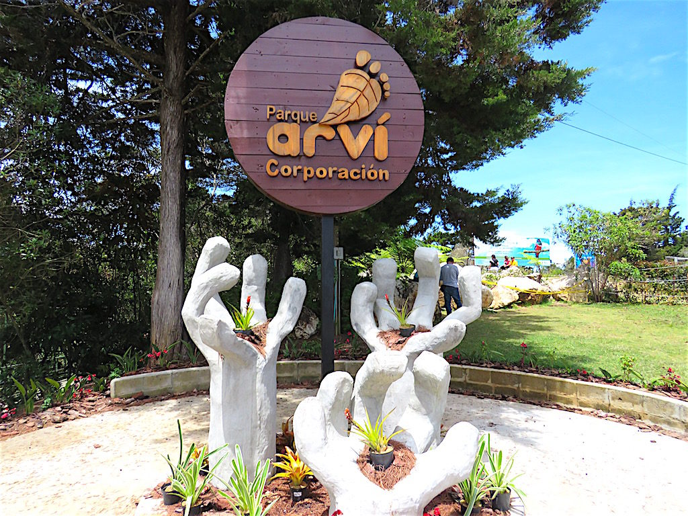
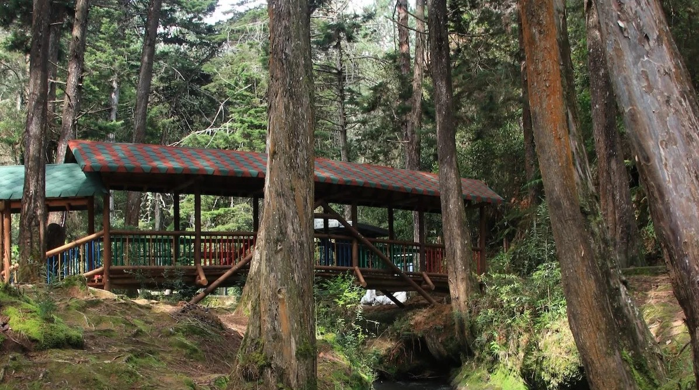
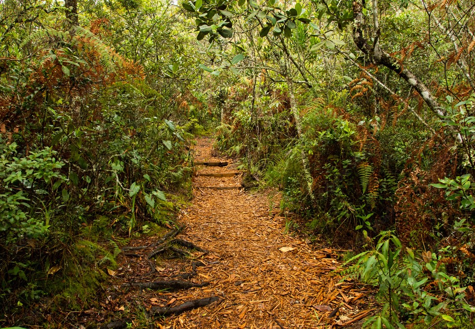
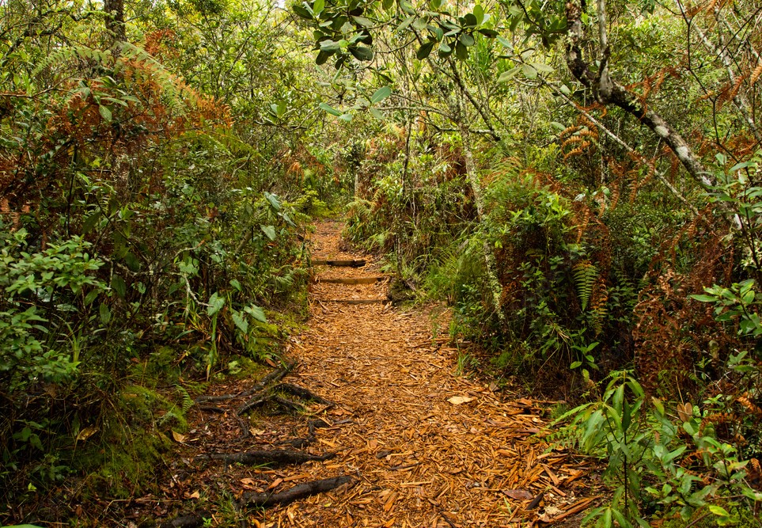

River Parks
It's the perfect place to relax. Here, you'll find green areas with benches for picnics and spending time with friends and family. Additionally, the River Pavilion is great for exercising or simply enjoying its modern architecture. Moreover, the Mist Plaza creates a cool atmosphere perfect for outdoor activities. From its 7 platforms or balconies, you can enjoy stunning views of the river and the city of Medellín. Don't miss the opportunity to explore nature and culture in this unique place in Medellín. River Parks has something for all young adventurers!
- What to do?
- ➣ Sunbathe..
- ➣ Take a walk with your pet.
- ➣ Engage in outdoor sports.
- ➣ Have a beer.
- ➣ In December, you can enjoy the holiday lights.
- ➣ Indulge in the cuisine of its 4 restaurants.


 



 
